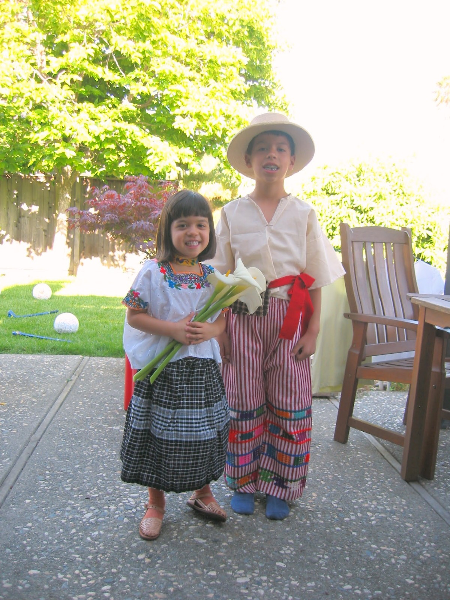
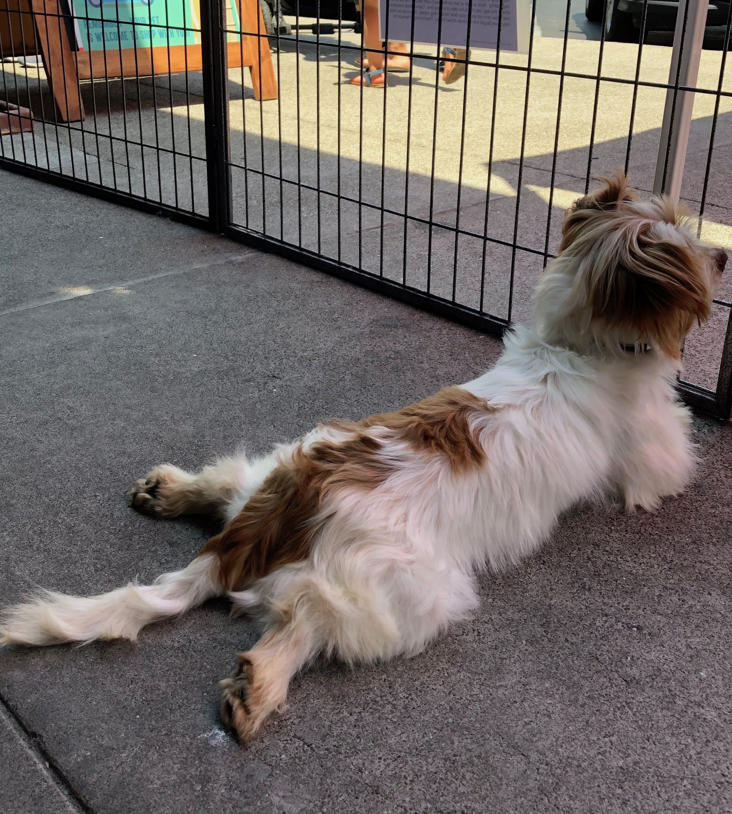
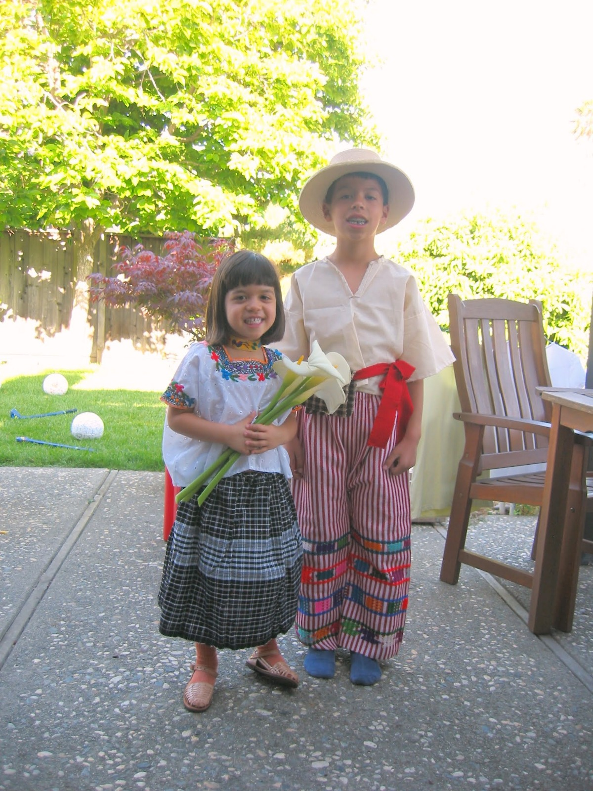
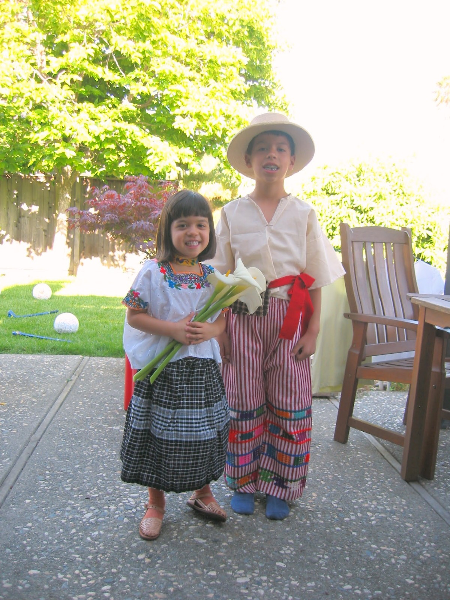

Hi, I'm Isabel. I'm 16 years old. An interesting thing about me is that I'm half Guatemalan and half Swiss. I also have an older brother, Diego.

This is not my puppy, but I think it's really cute, so I'm keeping it in.
I volunteer with a dog adoption organization called Doggie Protective Services

I love to dance and I was the dance captain of my hip hop/ breaking crew for 3 years.
Now, I go to a boxing gym.
School shtuff:
I currently attend Los Altos High School and I'm going to be a junior.
I got accepted into ASB during sophomore year and I was elected ASB treasurer for this upcoming school year.
I also did Haiti club for 2 years, started Model UN this past year, and have participated in Class Council since Freshman year.
This year, I'm also planning on joining Robotics Club and being a tutor at my school's writing center.


 
